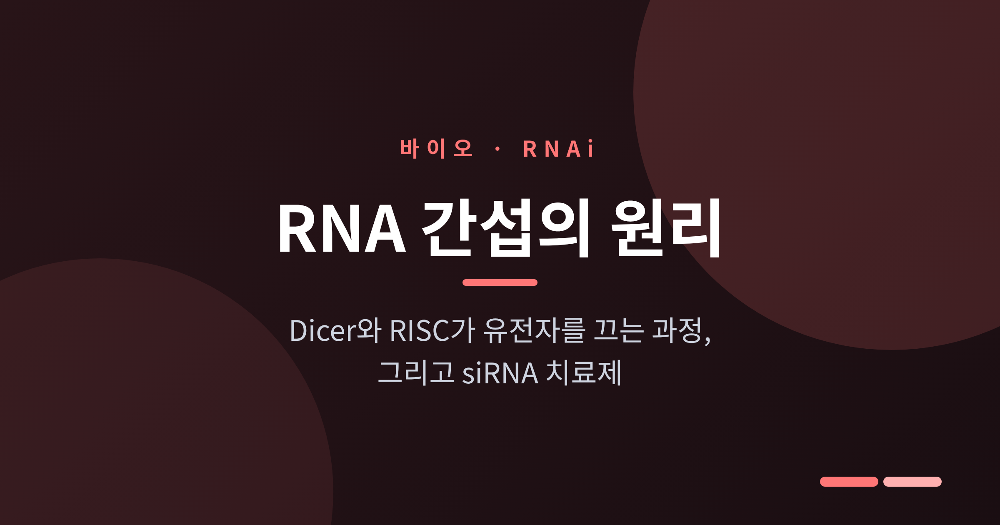
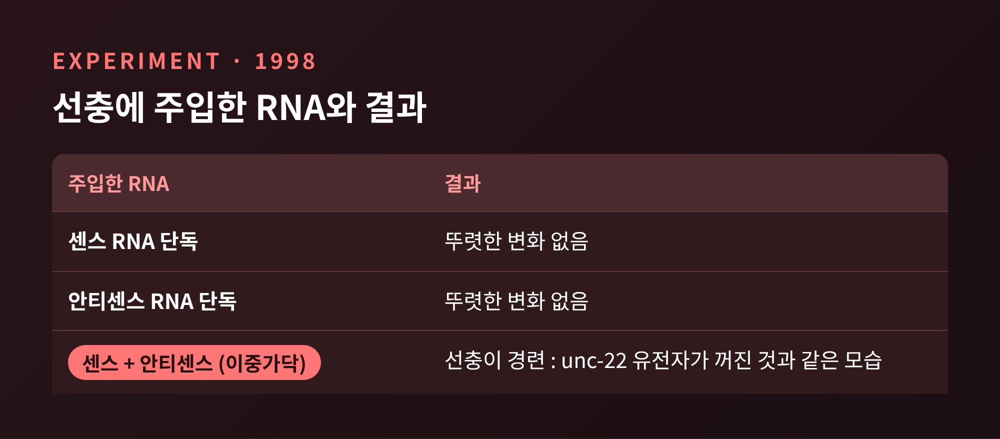
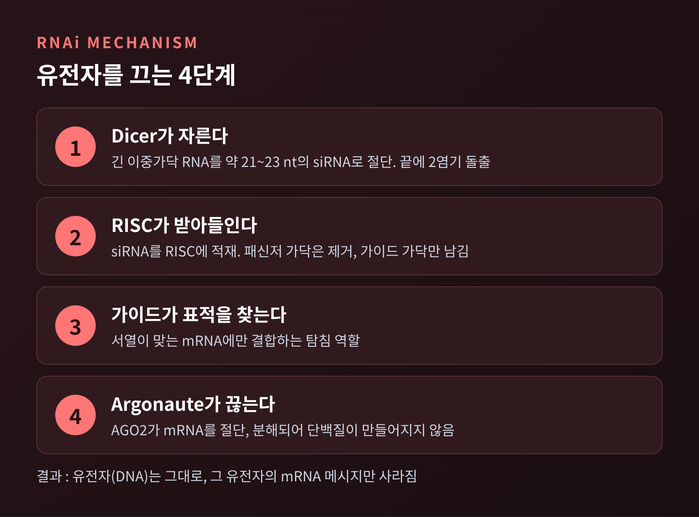
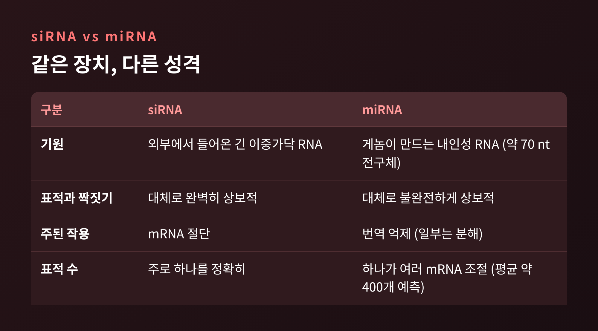
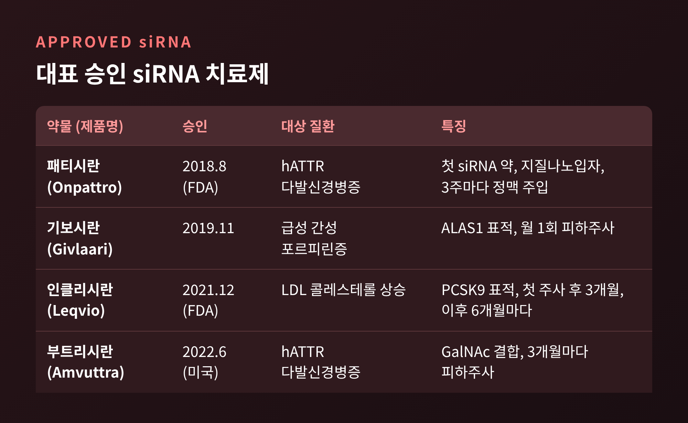
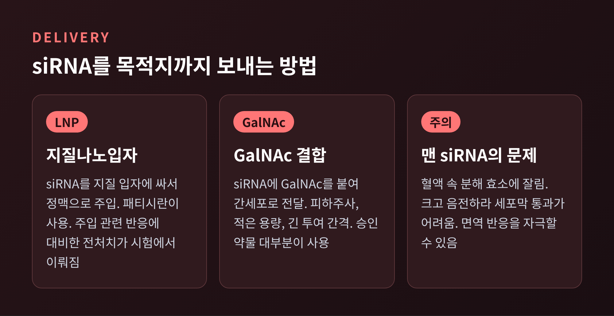

세 줄 요약
RNA 간섭은 이중가닥 RNA가 같은 서열의 유전자를 꺼 버리는 세포 안의 장치이며, 1998년 선충 실험으로 밝혀져 2006년 노벨 생리의학상을 받았습니다.
이중가닥 RNA는 Dicer가 잘게 자르고, RISC 속 Argonaute가 가이드 가닥으로 표적 mRNA를 찾아 끊습니다.
이 원리로 만든 siRNA 치료제가 2018년 패티시란(Onpattro)을 시작으로 승인되었고, 남은 숙제는 전달체입니다.
오늘은 RNA 간섭(RNAi)이 어떤 원리로 특정 유전자만 골라 끄는지, 그리고 이를 이용한 siRNA 치료제가 어디까지 왔는지 정리해 보려 합니다. 일반 교양 수준의 설명이며, 의학적 조언이 아닙니다.
■ 선충 실험에서 시작된 발견
1998년 2월, 앤드루 파이어와 크레이그 멜로는 Nature에 한 편의 논문을 발표했습니다. 무대는 예쁜꼬마선충(C. elegans)이었습니다.
근육 단백질 유전자 unc-22가 고장 나면 선충은 몸을 떨며 경련합니다. 두 사람은 이 유전자와 같은 서열의 RNA를 선충에 주입해 보았습니다.
센스 RNA만, 혹은 안티센스 RNA만 넣었을 때는 별다른 변화가 없었습니다. 두 가닥을 함께, 곧 이중가닥 RNA로 넣자 선충이 경련했습니다. 유전자가 실제로 망가진 것과 같은 모습이었습니다.
놀라운 점이 하나 더 있었습니다. 세포당 필요한 분자 수가 극히 적었고, 효과는 자손에게까지 이어졌습니다. 단순히 mRNA 하나에 RNA 하나가 달라붙어 막는 방식으로는 설명되지 않는다는 뜻이었습니다. 연구팀은 이 과정이 촉매처럼 작동하며 증폭될 가능성을 제안했습니다.
이 발견으로 두 사람은 2006년 노벨 생리의학상을 공동 수상했습니다. 노벨재단은 수상 업적을 "RNA 간섭, 이중가닥 RNA에 의한 유전자 침묵"이라고 소개했습니다.
예전에는 설명할 수 없는 현상이 있었습니다. 1990년경 식물학자들이 페튜니아 꽃색을 더 짙게 만들려다 오히려 꽃잎이 하얗게 변한 일이 그 예입니다. 지금은 RNA 간섭으로 설명되는 현상입니다.

■ Dicer, RISC, Argonaute: 유전자를 끄는 4단계
세포 안에서 일어나는 일을 순서대로 따라가 보겠습니다.
첫째, Dicer가 자릅니다. 긴 이중가닥 RNA를 Dicer라는 효소가 잘게 썹니다. 조각은 약 21~23 뉴클레오타이드 길이의 짧은 이중가닥이며, 이를 siRNA(짧은 간섭 RNA)라고 부릅니다. 한쪽 끝에 두 염기가 튀어나오는 구조가 특징이고, Dicer의 PAZ 도메인이 이 돌출부를 붙잡아 일종의 자 역할을 합니다. Dicer의 존재는 2001년 해넌 연구실의 에밀리 번스타인 등이 밝혔습니다.
둘째, RISC가 적재합니다. RISC(RNA-induced silencing complex)는 siRNA를 받아들이는 단백질 복합체입니다. 이중가닥 가운데 한 가닥은 버려지고, 다른 한 가닥만 남습니다. 노벨재단은 남은 가닥을 "탐침"에 비유합니다.
셋째, 가이드 가닥이 표적을 찾습니다. 남은 가닥을 가이드(안티센스) 가닥, 버려지는 쪽을 패신저(센스) 가닥이라고 합니다. 두 가닥 중 5' 쪽 결합이 덜 안정한 가닥이 가이드가 되는 경향이 있다고 알려져 있습니다. 가이드 가닥은 서열이 맞는 mRNA에만 달라붙습니다.
넷째, Argonaute가 끊습니다. RISC의 핵심 일꾼은 Argonaute 단백질입니다. 사람에게는 Argonaute 계열 단백질이 8가지 있는데, 이 중 mRNA를 실제로 자르는 활성은 AGO2만 가집니다. 잘린 mRNA는 분해되어 단백질로 번역되지 못합니다. 유전자 자체는 그대로인 채, 그 유전자의 메시지만 사라지는 셈입니다.
한 가지 짚을 점이 있습니다. 긴 이중가닥 RNA를 포유류 세포에 넣으면 인터페론 같은 비특이적 면역 반응이 일어납니다. 그래서 포유류에서는 2001년 튜슬 연구팀이 보인 대로 21 뉴클레오타이드의 짧은 RNA를 직접 넣는 방식이 쓰입니다.

■ siRNA와 miRNA, 비슷하지만 다릅니다
같은 장치를 쓰지만 두 RNA의 성격은 꽤 다릅니다.
siRNA는 주로 바깥에서 들어온 긴 이중가닥 RNA에서 만들어집니다. 표적과 완벽하게 짝을 이루어 mRNA 하나를 정확히 자르는 것이 보통입니다.
miRNA(마이크로RNA)는 우리 게놈이 스스로 만드는 RNA입니다. 약 70 뉴클레오타이드의 전구체가 Drosha 계열 복합체와 Dicer를 거쳐 만들어집니다. 표적과 불완전하게 짝지어 번역을 막는 경우가 많고, 하나의 miRNA가 비슷한 서열의 여러 mRNA를 한꺼번에 조절합니다. 예측치로는 miRNA 하나당 평균 약 400개의 표적 mRNA가 있다고 합니다.
정리하면 siRNA는 저격수에, miRNA는 지휘자에 가깝습니다. 노벨재단 자료에는 miRNA가 사람 유전자 상당수를 조절한다는 추정도 실려 있습니다. 2006년 자료는 약 500개 miRNA가 전체 유전자의 약 30%를 조절한다고 적었고, 이후 데이터베이스는 사람 miRNA 유전자 1,917개를 주석하고 있습니다. 시점에 따라 숫자가 달라졌다는 점도 함께 기억해 두시면 좋겠습니다.

■ 실험실 도구에서 약으로: 승인된 siRNA 치료제
기초 연구는 곧 약 개발로 이어졌습니다. 이 분야의 첫 승인 사례는 2018년 8월 10일 미국 FDA가 승인한 패티시란(Onpattro)입니다. 유전성 트랜스타이레틴 매개 아밀로이드증(hATTR)에서 생기는 다발신경병증이 대상입니다.
FDA는 이를 siRNA 계열 약물이 처음 승인된 사례라고 설명했습니다. 이상 TTR 단백질을 만드는 RNA를 침묵시켜 말초신경에 쌓이는 아밀로이드를 줄이는 방식입니다. 이 질환은 전 세계 약 5만 명이 겪는 희귀질환이고, 이전에는 증상 관리가 치료의 중심이었습니다.
임상시험은 225명이 참여했습니다. 패티시란군 148명은 3주마다 18개월간 주입을 받았고, 위약군은 77명이었습니다. 근력, 감각, 보행 같은 항목에서 위약보다 나은 결과가 보고되었습니다. 다만 주입 관련 반응이 흔해서 시험 참가자 전원이 스테로이드와 항히스타민제 등을 미리 받았고, 비타민 A 수치가 낮아져 보충이 필요하다는 점도 안내되었습니다.
이후 승인 약물이 이어졌습니다. 아래 표는 이번 조사에서 확인된 범위를 정리한 것입니다.

기보시란(Givlaari)은 2019년 11월 급성 간성 포르피린증 치료제로 승인되었고, 시험에서 발작 횟수가 위약 대비 70% 적었습니다. 인클리시란(Leqvio)은 2021년 12월 FDA 승인을 받았습니다. 혈중 LDL을 걷어 내는 수용체의 분해를 촉진하는 PCSK9 단백질, 그 생성을 줄이는 약이며, 첫 주사 뒤 3개월째에 한 번, 이후 6개월마다 맞는 일정입니다. 임상시험에서 LDL 콜레스테롤 감소폭은 지표와 시점에 따라 약 40~50%대로 보고되었습니다. 부트리시란(Amvuttra)은 2022년 6월 미국에서 승인되었고 3개월마다 피하주사로 투여합니다. 2025년 기준 FDA가 승인한 siRNA 약물은 모두 7종이라는 정리도 있습니다.
예전에는 3주마다 정맥으로 맞아야 했습니다. 지금은 연 2~4회 피하주사로 충분한 약도 나왔습니다. 투여 편의성이 확연히 좋아진 셈입니다.
■ 가장 큰 숙제, 전달체
siRNA는 약으로 만들기 쉽지 않은 분자입니다. 몸 안에서 맨몸으로 두면 혈액 속 분해 효소에 잘려 나갑니다. 크고 음전하를 띠어 세포막도 잘 통과하지 못하고, 때로는 면역 반응을 자극합니다.
그래서 운반 수단이 필요합니다. 패티시란은 지질나노입자(LNP)에 siRNA를 싸서 정맥으로 넣습니다. 이 입자는 네 가지 지질로 구성됩니다. 이후 승인된 약은 대부분 GalNAc라는 분자를 siRNA에 붙여 간세포로 보내는 방식을 씁니다. 용량을 줄이고 투여 간격을 늘리면서 피하주사가 가능해졌습니다.

한계도 분명합니다. 정리해 보면 이렇습니다.
간 중심입니다. 이번 조사에서 확인된 승인 약물은 모두 간에서 비롯되는 질환을 겨냥합니다. 간 밖 조직으로 보내는 일은 아직 풀어야 할 과제로 보입니다.
오프타깃 위험이 있습니다. 서열이 일부만 맞아도 엉뚱한 유전자가 눌릴 수 있습니다. 가능한 siRNA 중 약 10%가 상당한 오프타깃 효과를 보인다는 서술도 있습니다.
효과가 영구적이지 않습니다. 세포가 분열하면 siRNA가 희석되어 반복 투여가 필요합니다.
장기 효과는 더 지켜봐야 합니다. 인클리시란의 심혈관 사건 감소 여부는 후속 시험이 진행 중입니다.
마지막으로 한 가지만 덧붙이겠습니다. 선충에 RNA를 주입하던 기초 실험이 20년 뒤 환자에게 쓰이는 약이 되었습니다. 저는 이 과정이 호기심에서 출발한 연구의 힘을 보여 준다고 생각합니다.
"끄는 법을 알면, 고치는 길이 열린다." 그 길의 폭은 이제 전달체가 얼마나 넓혀 주느냐에 달려 있습니다.
이 글은 일반 교양 목적의 정리이며, 특정 질환의 진단이나 치료 판단은 의료진과 상의하시기 바랍니다.